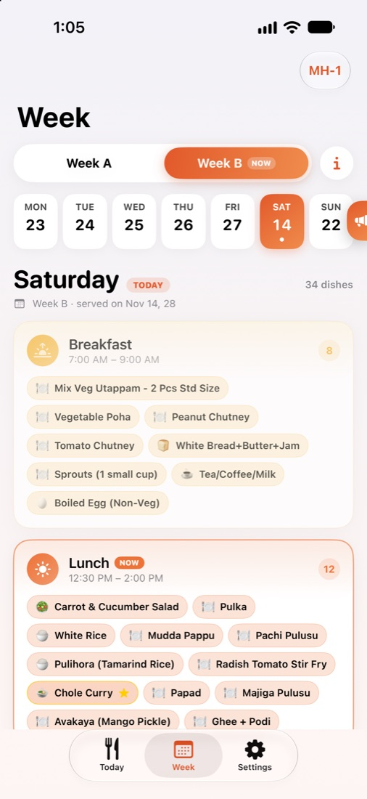
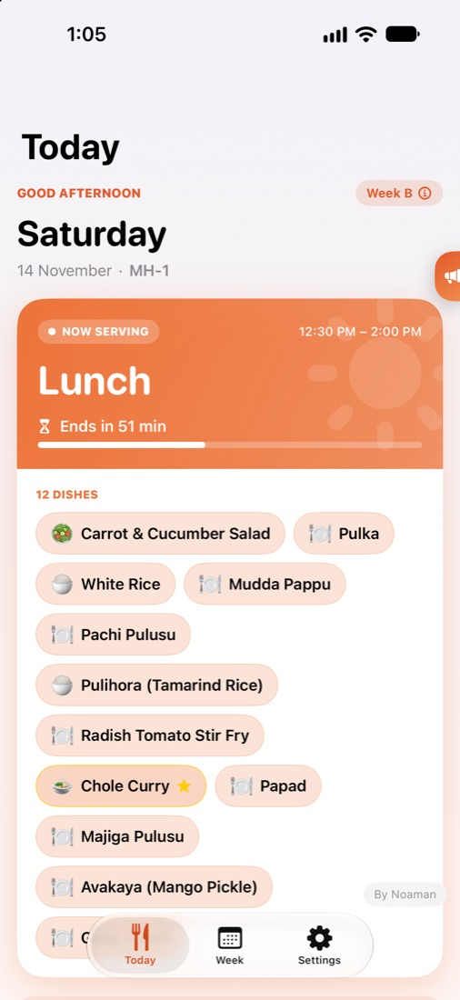
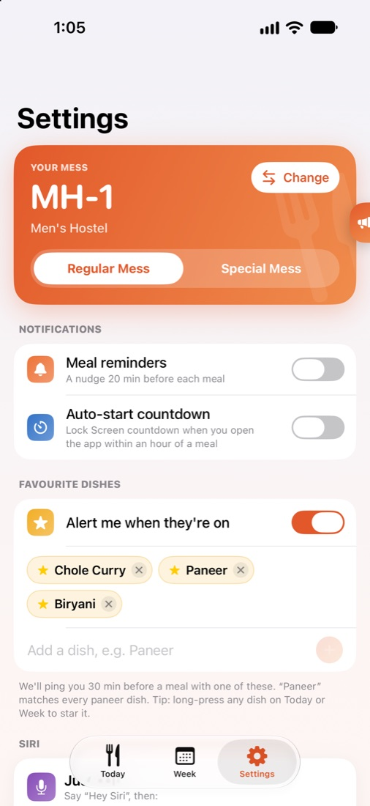

What's in the mess, right now.
Breakfast, lunch, snacks and dinner for your hostel, the moment you open the app. No group chats, no guesswork.



Breakfast, lunch, snacks and dinner for your hostel, the moment you open the app. No group chats, no guesswork.



Built by a student who got tired of asking “what's for dinner?”.
The meal that's on right now, or up next, with a live “ends in” timer and every dish.
VIT-AP's mess runs on a two-week cycle. The app works out which menu applies, every day.
Star a dish or type “Paneer”. You get a heads-up 30 minutes before it's served.
A live countdown to your next meal on the Lock Screen and in the Dynamic Island.
Home Screen, Lock Screen and StandBy widgets. See lunch without opening anything.
MH-1 to MH-7 and LH-1 to LH-4, Regular or Special mess. Updated live for everyone.
No need to open the app. Say “Hey Siri”, then ask for any meal. “Mess” and “campus” work in place of the app name.
No sign-up, no ads, no analytics. Your settings stay on your iPhone. Read the privacy policy.
Menus and mess announcements update live, with no app update needed. Works offline once loaded.